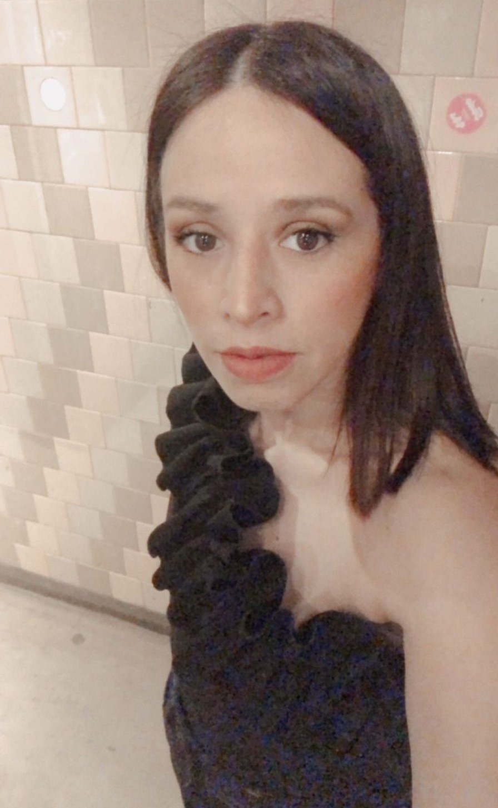

Te cuento un poco sobre mi...
Soy Daniela Bustamante, profesora de historia, asesora de imagen y mamá, por sobre todas las cosas. Comencé asesorando a mi hermana y a mis amigas, las acompañaba a comprar ropa, las maquillaba, les armaba los looks, me encantaba involucrarme en ese tipo de actividades, empezó quizás como un simple juego, un juego que con el paso del tiempo me di cuenta que era mi vocación.
Sin conocimiento previo, entendía el poder que tiene la imagen, el dominio que tiene sobre nosotros mismos, como la misma evidencia desde nuestra personalidad, hasta la manera de comunicarnos con los demás. Estudié, me recibí como asesora de imagen tanto de mujeres como de hombres, y deconstruí toda teoría aprendida para llevarla a la practica y al ejercicio real.

"Karl lo comparaba con la buena educación. Así como los buenos modales nunca van a estar "mejor vestido de lo que deberias". Para él, siempre era mejor estar un poco exageradamente arreglado que pecar de básico."
Karl Lagerfeld